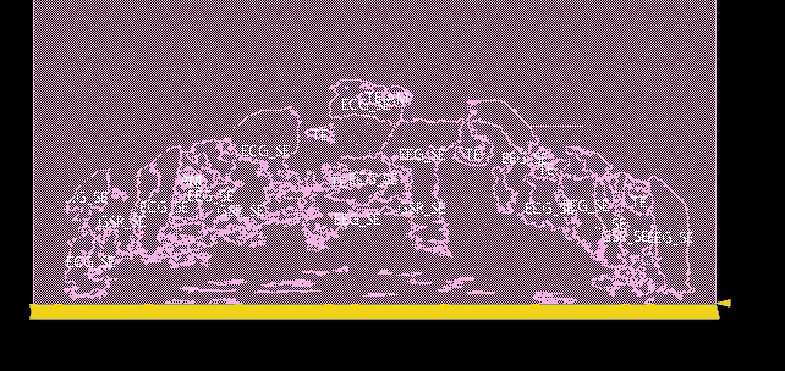

Work Experience
KLA EECS Intern
June 2020 - Present
My first experience creating a large project in an industry setting.
I designed and developed a test fixture to detect subpar fiber optic links used for a camera and communicated across teams to bring test fixture to manufacturing and production. Verilog, TCL, and Vivado were used to accomplish this deed.
I designed and developed a test fixture to detect subpar fiber optic links used for a camera and communicated across teams to bring test fixture to manufacturing and production. Verilog, TCL, and Vivado were used to accomplish this deed.

UC Berkeley Undergraduate Research
August 2020 - Present
Currently in Jan's lab performing research in optimizing hyperdimensional computing sensor fusion acceleration
implemented on ASIC TSMC 28nm technology.
An initial floorplan of the place & routed design shown to the left.
An initial floorplan of the place & routed design shown to the left.

KiwiBot Robot Deployment/Maintenance Intern
February 2019 - May 2019
Filled the stomachs of many UC Berkeley students through food-delivery-robot-deployment.
Deployed 20+ robots in the morning per day to serve
the UC Berkeley campus.
Developed hands-on experience with components including actuators and servo motors while installing and troubleshooting KiwiBots.
Exposed to start-up culture goals and deployed robots across the UC Berkeley campus.
Developed hands-on experience with components including actuators and servo motors while installing and troubleshooting KiwiBots.
Exposed to start-up culture goals and deployed robots across the UC Berkeley campus.